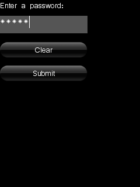
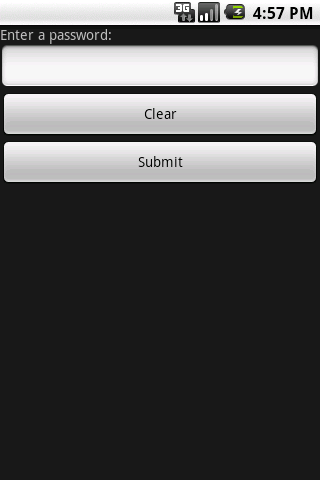
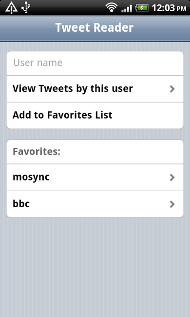

MoSync provides multiple solutions for cross-platform user interface development, including the NativeUI libraries in JavaScript and C++, the MAUI platform-independent C++ library, and the low-level Widget C API. This guide helps you decide which ones you need to use in building your app.
| Library/API | Description | Pros & Cons |
| Vanilla HTML/HTML5 | Simple forms, buttons, input fields |
|
| Wormhole NativeUI JavaScript API | Our JavaScript Library for native widgets. Overview | API reference | Example App |
|
| MAUI C++ Library | Our C++ Library for older devices. |
|
| NativeUI C++ Library | Our C++ wrapper for native widgets built on the Widget C API. Overview | Library reference | Example App |
|
| Widget C API | Our low-level C-level syscalls and IOCTLs. API reference |
|
|  |  |  |
| MAUI screen with MAUI widgets (MoRE) | Widget API screen with native widgets (Android) | An HTML UI, designed using jQTouch (Android) |
To create HTML/CSS-based user interfaces you do not need to use special calls. Any standard HTML/CCS file would work in MoSync. There are also several JavaScript UI frameworks designed specifically for mobile websites (e.g. Zepto.js, jQTouch, JQuery mobile, and Sencha Touch) in your MoSync apps.
On platforms that support NativeUI (Android, iOS, Windows Phone) you can develop the user interface in HTML/CSS and access device functionality from JavaScript using the Wormhole Library. Check out our documentation for creating HTML based projects in MoSync to learn more.
You can even create NativeUI widgets from you JavaScript code, or use declarative markup to define the entire UI in HTML (and hide the web view that contains the HTML). Check out the JavaScript Native UI guide for more information.
The MoSync Widget C API is a C-based API that uses the device’s native widgets, allowing you to create apps that are identical to the ones you create with the platform’s own SDK. It also brings you the power to integrate a web browser and utilize OpenGL in your applications. The NativeUI Widget API is primarily aimed at leading-edge platforms and currently supports Android, iOS (iPhone, iPad, iTouch), and Windows Phone.
Using the Widget API gives distinct advantages when you need:
Note that Widget API doesn’t work on MoRE, the MoSync emulator, so you must test and develop your application using the Android emulator, iPhone simulator, the Windows Phone emulator, or use a real device.
The NativeUI Library is a high-level C++ wrapper for the C-based Widget API. The Widget base class contains basic functionality and provides methods for managing widgets, like addChild, insertChild, and removeChild, and methods for manipulating widgets like setHeight, setVisible, and fillSpaceVertically.
The NativeUI Library includes a widget manager that handles widget events. This makes it easy to respond to widget events, you can select to receive specific events by setting listeners on widget objects.
MAUI uses custom non-native screens and widgets, enabling you to create application user interfaces that look exactly the same across all platforms. It runs not only on Android and iOS, but also on Windows Mobile, JavaME, Symbian, Moblin, MoRE ( the MoSync emulator ) and all the other platforms MoSync supports.
The Widget API and MAUI are similar to the user interface APIs that you will find in proprietary SDKs. The user interface is structured as a hierarchy of components consisting of containers called screens, and controls called widgets. Different widgets have different functions and properties which can be set in order to customize their appearance or behaviour. Special types of widgets called “layouts” give you control over the positioning of other widgets on the screen. As the user interacts with the widgets, events are sent from the framework library to the application code.
You can use the HTML/CSS user interfaces, the Widget API and/or the NativeUI Library, and MAUI together in the same application, switching between Widget screens and MAUI screens as needed, giving you absolute control over the user interface.
We provide example applications the different UI libraries in the examples folder in the download package. In particular, check out HelloNativeUI, NativeUIDemo, WormholeDemo, WormholeNativeUI, and HelloMAUI. (Read our guide called Importing the Examples to understand how to load and view the examples.)
The step-by-step tutorial Getting Started with HTML5 and JavaScript will take you through the process of getting started with creating and app with a HTML/CSS user interface.
In the guide Developing Apps in HTML5 and JavaScript, there are some pointer to how to create UIs in HTML5.
Our Introduction to MAUI tutorial covers a lot of the basics you need to get started both with MAUI and user interfaces in general.